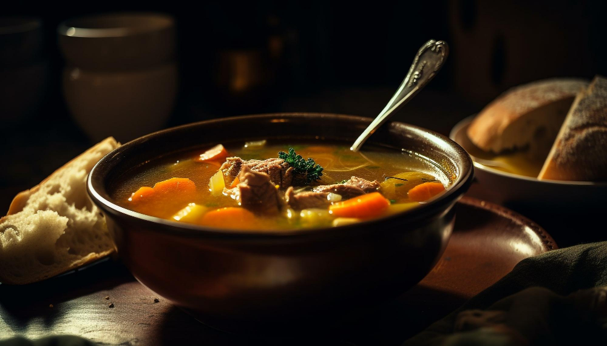

Hearty Beef Stew

This traditional stew is good eaten from a bowl or poured over dumplings.
Ingredients
- 3 tablespoons of vegetable oil
- 2 pounds of beef stewing meat, cubed
- 4 cubes of beef bouillon, crumbled
- 4 cups of water
- 1 teaspoon of dried rosemary
- 1 teaspoon of dried parsley
- 1/2 teaspoon of ground black pepper
- 3 large potatoes, peeled and cubed
- 4 carrots, cut into 1 inch pieces
- 4 stalks of celery, cut into 1 inch pieces
- 1 large onion, chopped
- 2 teaspoons of cornstarch
- 2 teaspoons of cold water
How to Prepare
- Heat oil in a large pot or Dutch oven over medium-high heat; add beef and cook until well browned.
- Dissolve bouillon in 4 cups water and pour into the pot; stir in rosemary, parsley, and pepper.
Bring to a boil; reduce heat to low, cover, and simmer for 1 hour. Stir in potatoes, carrots, celery, and onion.
- Dissolve cornstarch in 2 teaspoons of cold water; stir into stew. Cover and simmer until beef is tender,
about 1 hour.
- Serve and enjoy!